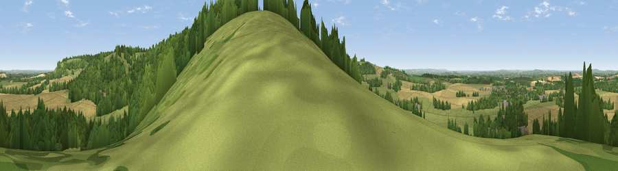

Viewpoint near Watlington
#10859 in England · top 8% of its area beats it · near WatlingtonThe view, rendered

A 360° render of this exact spot computed from the terrain model, tree cover and land cover — summer colours, afternoon light, calibrated against photographs of famous viewpoints. Real trees, hedges and buildings will differ in detail.
The panorama
Grey silhouette: terrain skyline in each direction (720 bearings, Earth curvature and refraction included). Dashed green: skyline with trees (+15 m) and buildings (+8 m) as obstacles. Blue strip: how far the ground is visible on each bearing.
Where the view opens
Wedge length = distance to the farthest visible ground on that bearing (vegetation-aware). Rings at 10, 25 and 50 km.
What fills the view
39% grassland · 32% cropland · 27% woodland · 2% built-up
Angular shares of the visible panorama (visual magnitude), not map area. Landscape diversity 0.51 (0–1 Shannon).
Key numbers
More beautiful places nearby
The staircase of upgrades: each row has a higher view potential than everything closer. Driving times are estimates from straight-line distance, calibrated against real road routing — check an actual route before setting out.
| Place | Direction | Drive | Score |
|---|---|---|---|
| Viewpoint near Watlington | SSE · 0 km | ~1 min | 70.6 |
| Viewpoint near Lewknor | NE · 2 km | ~6 min | 70.8 |
| Viewpoint near Lewknor | NE · 4 km | ~10 min | 74.4 |
| Coombe Hill Monument | NE · 20 km | ~33 min | 75.5 |
| Viewpoint near Woolstone | W · 41 km | ~60 min | 76.7 |
| Martinsell viewpoint | WSW · 60 km | ~82 min | 77.3 |
| Broadway Hill | NW · 72 km | ~96 min | 77.7 |
| Viewpoint near Buriton | S · 74 km | ~97 min | 80.0 |
51.63876, -0.98912 · source: osm viewpoint · position refined by local search. Computed location — check access rights before visiting.